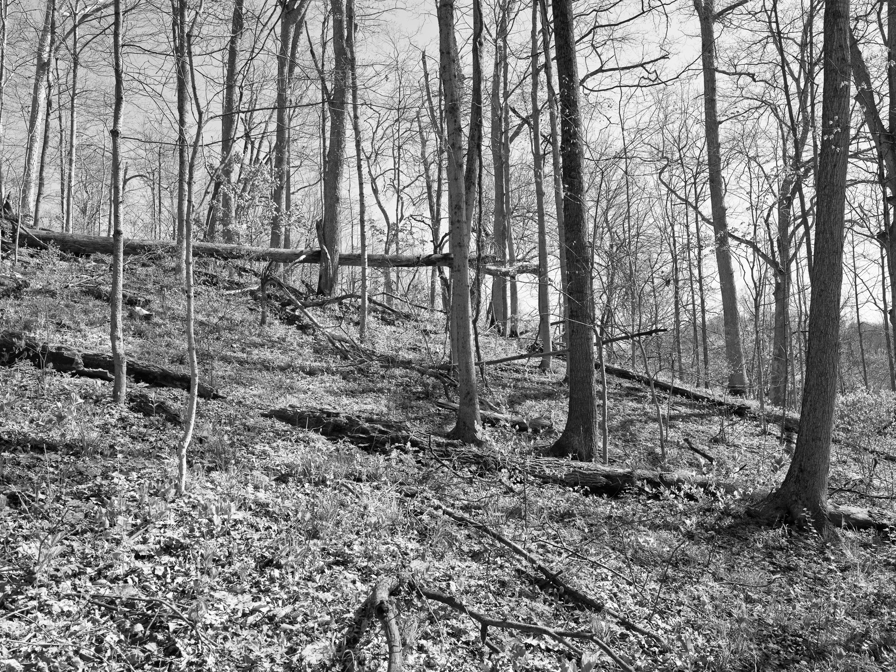
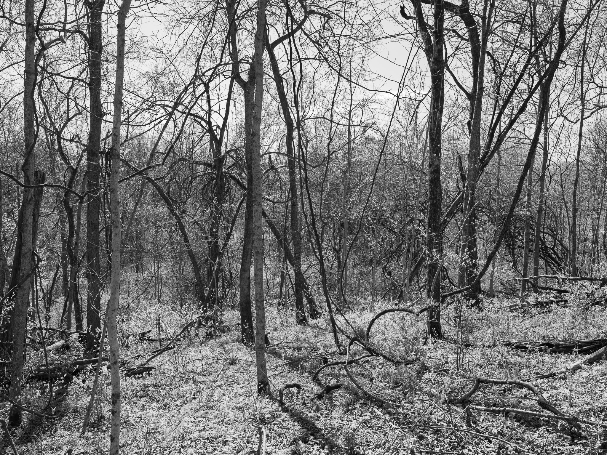
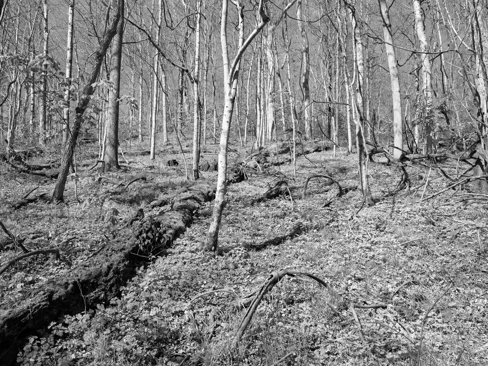
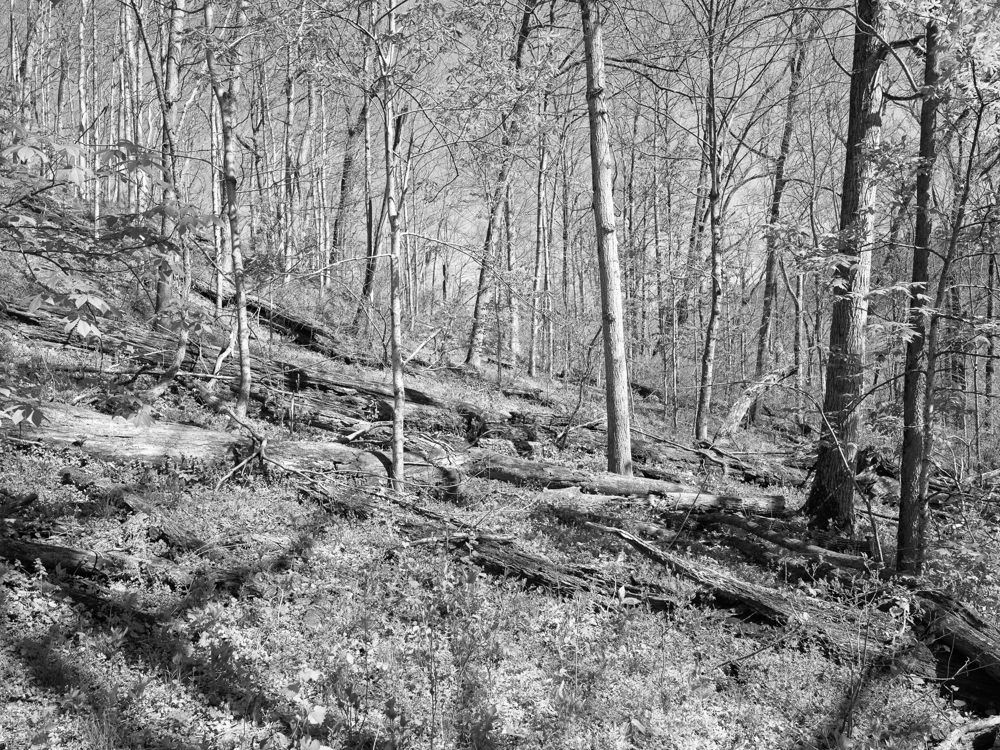
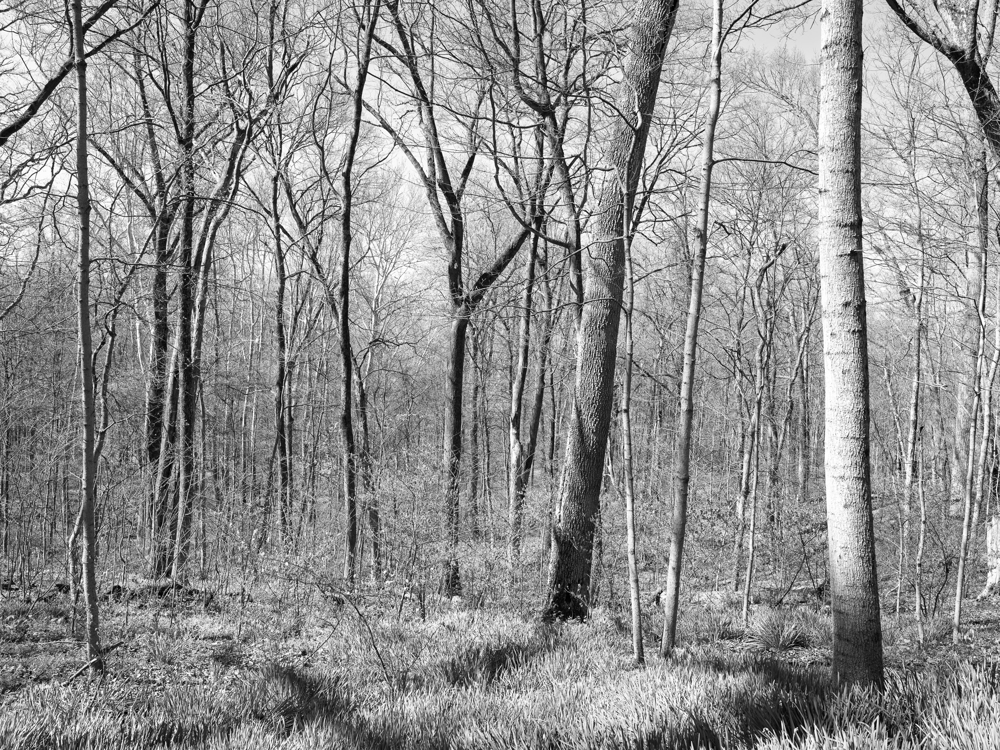

Public Lands Institute
Index
Archive
Dinsmore Woods State Nature Preserve
KY

Dinsmore Woods State Nature Preserve I · 2026-04-08
_DSF1233.jpg

Dinsmore Woods State Nature Preserve II · 2026-04-08
_DSF1235.jpg

Dinsmore Woods State Nature Preserve III · 2026-04-08
_DSF1236.jpg

Dinsmore Woods State Nature Preserve IV · 2026-04-08
_DSF1243.jpg

Dinsmore Woods State Nature Preserve V · 2026-04-08
_DSF1255.jpg
View all 5 images
← Big Bone Lick State Historic Site
Caesar Creek State Park →